This tutorial for Oracle® APEX 18.1 (Application Express) demonstrates how to build a working application for managing projects and tasks using some of the latest features of APEX 18.1. This exercise assumes no prior knowledge of Application Express.
This lab can also be utilized for migrating your application development from one environment to another, such as from on-premises to the cloud.
Workshop Scenario
Your team tracks projects you are currently working on. Rather than using a spreadsheet or some commercial project tracking tool you have been tasked with building a Web application so that the team has a custom application that meets everyone's requirements. The DBA has created a script which creates various tables and populates them with the current data.
Optionally, part way through the development of this application you decide to move your development to the Oracle Database Cloud Service. In this way you can continue developing the application from anywhere, rather than only when you are in the office.
In this first workshop you quickly build a simple application that allows everyone to maintain the data. In the second workshop you will greatly improve the application and utilize a number of advanced techniques to make a very polished application.
The second workshop can be downloaded here.
Time to Complete
Approximately 2 hours
Introduction
Oracle APEX is a rapid web application development tool for the Oracle Database. Using only a web browser and limited programming experience, you can develop and deploy professional applications that are both fast and secure. Application Express is a fully supported, no cost option of the Oracle Database.
In this tutorial, you use Oracle APEX to build a fully functioning database application to maintain team members, projects and associated tasks. Tasks may be assigned to milestones and are associated with a specific project.
Prerequisites
To run this tutorial, you need:
Access to an Oracle APEX 18.1 (or later) environment, such as an account on apex.oracle.com, or the Oracle Database Cloud Service, or a local installation of Oracle Database 11g or higher with Oracle APEX 18.1 installed.
An Application Express workspace and a development user.
In this topic, you create the required database objects, and populate the tables with sample data. It is essential to have at least the tables defined for the Create Application wizard to generate pages in your application.
Logging in
Sign in to your Application Express development environment.
Installing a Sample Dataset
Oracle APEX includes the SQL Workshop for application developers to maintain database objects, from the browser.
This feature is particularly important when developing in hosted environments, or where the application developer does not have direct access to the underlying database and cannot use tools such as SQL Developer or SQL*Plus to manage the database objects.
Use SQL Workshop to load a sample dataset that will form the basis of the Demo Projects application.
Click the down arrow ( ↓ ) right of SQL Workshop, select Utilities, and click Sample Datasets.
Find Project Data, and click Install.
Click Next.
Click Install Dataset.
Review Load Sample Dataset - Results to ensure no errors were raised.
Click Exit.
Note: Instead of clicking Exit in the last step, you could have gone directly into the Create Application Wizard by clicking Create Application. In the next topic you will use the Create Application Wizard to create an application based on the tables just created.
Reviewing the tables created
Use the Object Browser within SQL Workshop to review all the database objects, such as the tables you created,
available in the underlying Oracle database schema which is associated with the Oracle APEX workspace you logged into.
At the top of the page, click the up arrow ( ↑ ) left of Utilities to go back to the main page for SQL Workshop.
Click Object Browser.
In Object Browser, select the SAMPLE$PROJECTS table, then click on the Data tab.
Note: There may be a number of other tables listed, outside of those you created using the sample dataset above.
The APEX$ tables are created by Application Express to store internal data specific to your workspace.
Tables such as DEMO_CUSTOMERS were created when the Sample Database Application was installed.
The Sample Database Application may be installed by default when an Application Express Workspace is created.
In this topic you created tables in the Oracle Database and populated them with data using Sample Datasets.
Generally, you would identify existing tables and views or define new data structures on which to build your application.
Creating the Initial Application
In this topic, you create the initial application using the Create Application wizard to define multiple pages.
Now that you have created the underlying tables, you are ready to create a desktop application.
You will be adding reports and forms for the tables you created.
Starting the Create Application Wizard
Click the down arrow ( ↓ ) next to App Builder, then select Create.
Click New Application.
Note: You could also just click Next as New Application is selected by default.
In Name, enter Demo Projects.
Click Set Appearance, at the end of the Appearance item.
For Theme Style, click Vita - Red.
Click Choose New Icon, next to the Application Icon.
Click the Red circle at the top.
Click the icon with the three people (Second row, sixth icon from the left).
Click Set Application Icon.
Click Save Changes.
Adding Pages
Generally, when developing an application, you will not know all the pages required at the beginning, so you only generate a select number of pages initially.
Then you use the Create Page wizard to add additional pages as required.
However, for this exercise you will generate most of the pages required for the application up front.
Any number of pages can be added into the initial application by simply clicking Add Page, and then selecting the appropriate details.
Once the page has been added, the attributes can be updated by clicking on Edit for that page.
Individual pages can also be removed from the list by clicking on Edit, and then clicking on Delete.
Add a cards page for the projects.
A card page consists of individual boxes, which resemble index cards, laid out on a page. Each card holds up to three pieces of information.
Click Add Page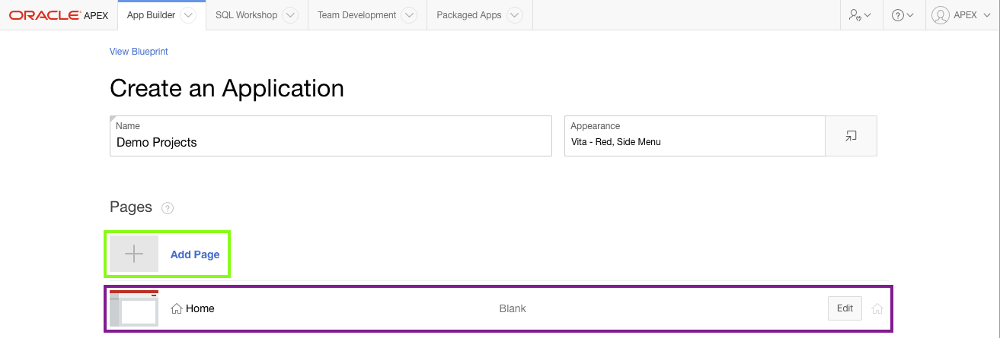
Note: The Create Application Wizard creates a Home page automatically.
Click Cards.
Enter the following details for the cards page:
Page Name - enter Projects
Table or View - select SAMPLE$PROJECTS
Card Title - select Name
Description Column - select Description
Additional Text Column - select Budget
Click Add Page.
Add a dashboard page to the application.
A dashboard page consists of up to four charts. As a developer you can specify the specifics of each chart or leave the default sample charts, and then update the page post-generation.
Click Add Page again.
Click Dashboard
Enter the following details for Chart 1:
Chart Type - click Bar
Chart Name - enter Project Costs
Table or View - select SAMPLE$PROJECT_TASKS
Label Column - select PROJECT_ID
Aggregate Type - click Sum
Value Column - select COST
Click Chart 2.
Enter the following details for Chart 2:
Chart Type - click Pie
Chart Name - enter Project Status
Table or View - select SAMPLE$PROJECTS
Label Column - select STATUS_ID
Aggregate Type - click Count
Value Column - leave it as All Columns {the default}
Click Add Page.
Move the Dashboard page up above the Projects page.
Find the Dashboard page in the list of pages.
Click and hold the mouse on the hamburger ( ), after the edit button, and drag the page up until it displays between the Home page and Projects page.
Release the mouse.
Add an Interactive Grid for Milestones.
An interactive grid is similar to a spreadsheet and allows end users to update multiple rows of data in a single transaction.
Click Add Page.
Click Interactive Grid
Enter the following details for the interactive grid page:
Page Name - enter Milestones
Query Type - leave as Table or View {the default}
Grid Type - leave as Allow Editing {the default}
Table or View - select SAMPLE$PROJECT_MILESTONES
Click Add Page.
Add a Report (and Form) for Tasks.
"Report and Form" is the most common page construct within web applications.
End users use the report to identify the specific record they are interested in, and then click on the record to drill-down to a form page with further details.
By default reports are created as Interactive Reports, which allow end users to readily manipulate the data returned.
End users can select which columns to display or hide, add filters, reorder data, define group by or pivot reports, and much more.
Click Add Page.
Click Report
Enter the following details for the report page:
Page Name - enter Tasks
Query Type - leave as Table or View {the default}
Report Type - leave as Interactive Report {the default}
Table or View - select SAMPLE$PROJECT_TASKS
Include Form - check the checkbox Note: This checkbox will create a form page which is linked to records in the report.
Click the right arrow ( → ) in front of Lookup Columns to expand the Lookup column selection. Note: Lookup columns are used to display columns from the parent table associated with a foreign key relationship.
For example, in the EMP table there is a DEPTNO column which relates to the DEPT table.
Therefore, instead of showing the DEPTNO column you could define a lookup column to display the department name, which is more meaningful to end users.
Administration pages are restricted to application administrators, so not all users of the application can access the administrative features.
Generally, it is best to only allow administrators to maintain code tables, such as Statuses.
Click Add Page.
Click Report
Enter the following details for the report page:
Page Name - enter Statuses
Query Type - leave as Table or View {the default}
Report Type - leave as Interactive Report {the default}
Table or View - select SAMPLE$PROJECT_STATUS
Include Form - check the checkbox Note: This checkbox will create a form page which is linked to records in the report.
Click the right arrow ( → ) in front of Advanced to expand the Advanced option.
Check Set as Administration Page
Click Add Page.
Including Features
Features provide application-level functionality and are typically added once per application.
Features help to broaden the application's capabilities, making it more suitable for wide distribution, rather than just being suitable for a proof-of-concept. Note:Features can also be added to existing applications using the Create Page Wizard post-generation.
Click Check All next to Features
Uncheck Access Control, as initially we don't want to be limited by security.
Updating Settings
Settings are application-wide and are used to define attributes used to generate the application.
Select Advanced Settings.
Enter the following advanced settings:
Short Description - enter Maintain project details.
Description - enter This application is used to maintain project details for the team. Projects include milestones, where you can define due dates. Tasks can be defined against a milestone or directly against the project. As well as tracking dates, this application also tracks budget, for the project, and costs against each task.
Click Save Changes
Creating the Application
Once all the necessary details are entered, it is simply a matter of pressing Create Application.
Click Create Application.
Upon completion the app builder will be displayed for the application generated.
The pages defined in the wizard will be displayed at the bottom of the application home page.
Click Run Application
Note: Page 0 is a global page where you can define components to be displayed on all pages.
Page 9999 is the Login Page where end users authenticate (enter their username and password) when first accessing the application.
Page 1000 and above are the administrative pages created based on the features you selected.
Enter your developer credentials to run the application.
Navigate around the application to review the functionality included!
In this topic you used the Create Application Wizard to generate multiple pages. However, this is just the start of your application development, and the generated pages still need more work for your application to be ready for showing to end users.
Updating the Project Page(s)
In this topic, you are introduced to Page Designer,
which you will use to update the link on the Projects page and to make numerous changes to the form page you will create.
As an APEX developer you will spend the majority of your time within Page Designer, where you update pages to improve the application.
Note: If you have not completed the previous topic, import the APEX 18.1 HOL Basic Topic 2.sql file into your workspace to continue working from this topic forward. You can find the export file in the /files subdirectory where you unzipped the original file. See Appendix A - Importing an Application.
Introduction to Page Designer
In the previous topic you finished by running the application.
Given that you ran the application from the Application Builder, there is a Developer Toolbar at the bottom of the screen.
This toolbar allows developers to quickly navigate between runtime and various sections within the Application Builder.
The Developer Toolbar also allows developers to initiate and view runtime debugging, show the HTML grid, quick edit page components, and run the Theme Roller.
Note: When end users enter the URL directly, for example https://apex.oracle.com/pls/apex/f?p=146310, to access the application then the developer toolbar will not be displayed.
Navigate to the Dashboard page in the runtime application.
In the Developer Toolbar, click Edit Page 2.
Note: If you are not on the Dashboard page then the Developer Toolbar will show the current page number, and clicking on Edit Page xx will navigate to that page, instead of Page 2.
Page Designer is displayed for Page 2: Dashboard.
The Page Designer is a powerful IDE that includes a toolbar and multiple panes, used to maintain and enhance pages within Oracle APEX applications.
The toolbar across the top of the page has a number of capabilities:
Page Selector - Displays the current page.
You can enter a page number directly, click on the popup list of values to select a page, or use the up / down arrows to navigate to the page before / after.
Page Lock - Indicates if the page is unlocked (clear), locked by you (green), or locked by another developer (red).
By clicking on this icon, you can lock or unlock the page, providing it is not locked by another developer.
Undo Changes - Click to undo the previous update you made within Page Designer.
Redo Changes - Click to reapply the last update that was undone using Undo Changes.
Create - Create new pages, regions, shared components, developer comments and team development entries.
Utilities - Delete the current page, perform a check, export, or invoke various utilities.
You can also access the attribute dictionary, application utilities or upgrade the application.
Shared Components - Navigate to the Shared Components page.
Shared Components are defined at the application-level and are generally used on multiple pages within the application.
Save - Save all changes you have made on the current page.
Save and Run Page - Save all changes and then run the current page.
Note: You will not be able to run modal and non-modal pages directly using Save and Run Page. Instead you will need to navigate to a normal page and run the page from there and then navigate within the running application to the modal or non-modal page.
Of these capabilities you will most often use Page Selector, Undo Changes, Shared Components, Save, and Save and Run Page.
There are three main panes within Page Designer:
Note: You can change the size of each pane by selecting the dividers and sliding them left or right. Change the size of Layout and Gallery by sliding the divider between them up and down. You can also drag and drop the tabs between the panes.
Left Pane - Includes tabs for Rendering, Dynamic Actions, Processing, and Shared Components.
Each tab displays a list of the corresponding component types and components created on the current page.
Rendering - Shows all the page components grouped by the template used to display them.
Dynamic Actions - Are declarative interactive client-side processes.
Processing - Displays the functionality invoked when a page is submitted back to the database.
Shared Components - Lists application-wide components utilized on this page.
Note: Right-click to access context sensitive menus.
You can also drag components up and down within the trees to change the position or sequence of the selected component.
Central Pane - Includes tabs for Layout, Component View, Messages, Page Search, and Help.
Layout - Shows a visual representation of how the components will be positioned on the page.
You can add new components to a page by dragging them from the Gallery pane, at the bottom, and dropping them in the Layout.
Component View - Displays the same page components as provided in the rendering tab but grouped by component type.
Messages - Displays current errors and warnings.
Clicking on a message changes the focus within Property Editor to the corresponding attribute associated with the error or warning.
Page Search - Enables you to search for any text within the current page.
Help - Displays attribute specific help.
Click on the attribute name within Property Editor to see information and examples for that attribute.
Right Pane - Displays the Property Editor.
Property Editor - Use to update attributes for the selected component(s). Note:: When you select multiple components the Property Editor only displays common attributes. Updating a common attribute will update that attribute for all the selected components.
Page Designer Shortcuts
Page Designer provides a number of keyboard shortcuts that can improve developer productivity.
Click Alt + Shift + F1, or click Help on the toolbar, and then select Shortcuts.
For example, using Go to Rendering (Alt + 1 on Windows / Option + 1 on Mac) and Go to Property Editor (Alt + 6 on Windows / Option + 6 on Mac) are useful for navigating between different page components, such as regions or items, and then updating attributes using only the keyboard, rather than having to move the mouse left to right and right to left continually.
To Access the list of shortcuts use Alt + Shift + F1 on Windows or Option + Shift + F1 on Mac.
Alternatively, in Page Designer, click Help, shown as a question mark on the toolbar, and then select Shortcuts.
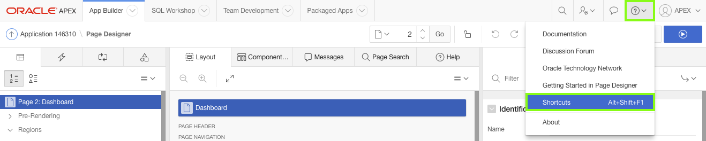
Changing Pages in Page Designer
Page Designer shows the currently selected page, in this case Page 2: Dashboard. You need to navigate to Page 3: Projects to work on the Project pages.
To navigate to another page in Page Designer you have two options:
Click the Page Finder icon, in front of the current page number, and then select the desired page from the list.
Or, click the up and down arrows after the current page number, to go to the next and previous pages respectively.
In Page Designer, within the toolbar, click the up arrow ( ↑ ), next to the page number 2, to navigate to Page 3.
In the Toolbar, click Save and Run Page to run the Projects page.
Note: If a dialog, similar to the one shown above, appears, click Try Again.
One way to avoid this dialog displaying is to click Save and then click Save and Run.
In the runtime environment, click on one of the project cards.
Nothing happens!
When creating the Projects card page, using the Create Application Wizard, there is no option to include a Form page.
Therefore, you will need to add a page to the application to allow maintenance of project records.
In the runtime environment, using the Developer Toolbar, click Edit Page 3.
Page Designer will be displayed for Page 3: Projects.
Adding a Project Form Page
The Create Page Wizard enables the creation of a large variety of different page types.
However, after a small amount of experience, you will be able to quickly navigate around the available options to create many different pages.
In Page Designer, within the Toolbar, click Plus ( + ), then select Page.
In the Create Page Wizard, for Page Type, click Form.
Click Form on a Table.
In Page Attributes, enter the following:
Page Name - enter Maintain Project
Page Mode - select Modal Dialog
Click Next.
In Navigation Menu, keep the default Do Not associate this page with a navigation menu entry.
Click Next.
In Source, enter the following:
Table / View Name - select SAMPLE$PROJECTS
Click Next.
In Form Attributes, keep the default Managed by Database (ROWID).
Click Create.
Upon completion of the Create Page Wizard, Page Designer will be displayed with the new page loaded.
Page Designer should show Page 9: Maintain Project.
You need to navigate back to Page 3: Projects so that you can include a link to the new form page.
In Page Designer, click the Page Finder icon (to the left of Page 9), and select 3 Projects Desktop.
In Page Designer, click the Projects region.
Reviewing the SQL Query, you can see that the SQL uses alias names, such as CARD_MODIFIERS, CARD_LINK, and so forth.
These specific aliases are required by the Cards region to produce the correct output.
There is already an alias CARD_LINK which can be updated to link to the new page you just created.
In the Property Editor, update the following:
Source: SQL Query - enter the following code:
select ' ' card_modifiers
, apex_util.prepare_url( 'f?p=&APP_ID.:9:&SESSION.:::9:P9_ROWID:'|| rowid ) card_link
, ' ' card_color
, ' ' card_icon
, apex_string.get_initials(name) card_initials
, name card_title
, description card_text
, 'Budget '|| to_char(budget,'L99G999') card_subtext
from sample$projects
Note: For CARD_LINK it uses the syntax for an APEX page request. In particular it uses the following:
f?p= - is a prefix used by ORACLE APEX
&APP_ID. (Application) - substitutes for the application id (In the screen shots that would be 146310)
9 (Page) - is the page within the application to be displayed
&SESSION. (Session) - is the current session number
null (Request) - can be used to set the operation or button used to invoke the call
null (Debug) - can be used to display details about processing
9 (ClearCache) - clear the values cached on the page(s) specified
P9_ROWID (itemNames) - comma-delimited list of item names which will have session state set
ROWID (itemValues) - comma-delimited list of values used to set the session state for the item names listed
Now it is time to test the new link and view the Maintain Project page you just created.
In Page Designer, click Save and Run.
In the Runtime environment, click one of the Project cards.
The Maintain Project page is displayed as a modal page.
Updating the Form Page
A bit of clean-up is required on the modal page to make it 100%. This includes changing the status to use a list of values, changing some item types, and hiding the audit columns.
In the Runtime environment, within the Developer Toolbar, click Edit Page 9.
The first step is to move the status item (P9_STATUS_ID) down below Budget and in front of Completed Date.
Click and hold P9_STATUS_ID and drag it down to the desired location, and then drop the item (release the mouse).
Note: If you hover on the same line, and to the left of P9_COMPLETED_DATE a dark yellow rectangular box will appear.
Change the Status item to be a select list.
In the Rendering tab, under Maintain Project, click P9_STATUS_ID.
In the Property Editor, enter the following:
Identification: Type - select Select List
Label: Label - enter Status
List of Values: Type - select SQL Query
List of Values: SQL Query - enter the following:
select description d, id r
from SAMPLE$PROJECT_STATUS
order by display_order
Note: this SQL uses the base table SAMPLE$PROJECT_STATUS which includes a column called display_order to ensure the records are displayed in the correct order.
List of Values: Display Extra Values - click No
List of Values: Display Null Value - leave as the default (Yes)
List of Values: Null Display Value - enter - Select Status -
Both the Name and Project Lead items should be changed to text fields.
In the Rendering tab, or Layout tab, under Maintain Project, click P9_NAME, hold down the Control key < Ctrl > and then click P9_PROJECT_LEAD.
In the Property Editor, enter the following:
Identification: Type - select Text Field
Note: Only the common, updateable attributes are displayed in the Property Editor when more than one component is selected.
Create a sub region for the audit columns that can be collapsed to conserve real estate when the details are not being viewed.
In the Rendering tab, right-click Maintain Project region, and click Create Sub Region.
In the Rendering tab, under Maintain Project, select New region.
In the Property Editor, enter the following:
Identification: Title - enter Audit Details
Appearance: Template - select Collapsible
Server-side Condition: Type - select Item is NOT NULL
Server-side Condition: Item - select P9_ROWID
Note: By setting the server-side condition to check that the Rowid is not null, the region will only be displayed when updating a record, as the Rowid is null when inserting a record.
Update the Template Options directly from within the Property Editor.
In the Property Editor, under Appearance, click Template Options.
In the Template Options dialog, update the following:
General: Remember Collapsible State - check the box
Default State - select Collapsed
Style - select Remove Borders
Click OK.
Note: Updating the Template Options in Page Designer is significantly harder as you cannot see the impact of the changes immediately, like you can when updating them in the Runtime environment.
The audit columns can be moved using drag and drop, or by updating the region name in the Property Editor.
While all four audit columns are selected it is important to make them all Display Only so end users cannot update the values.
In the Rendering tab, under Maintain Project, click P9_CREATED, hold down the Shift key < Shift >, and click P9_UPDATED_BY, which will highlight all four audit columns.
In the Property Editor, update the following:
Identification: Type - select Display Only
Layout: Region - select ..Audit Details
Appearance: Template - select Optional - Floating
Run the application to review the Maintain Project page.
In Page Designer, click Save.
Navigate to the browser tab, where you previously ran the application, and refresh the page.
Click on one of the Project cards.
The revised Maintain Project page is displayed.
Note: If you click Save and Run on a modal page then the error below will be displayed. Instead, you need to navigate back to the runtime environment manually, or change the page selected in Page Designer to a non-modal page, such as Page 3: Projects.
Adding a Dynamic Action
Dynamic Actions within Oracle APEX are used to declaratively define client-side behaviors without needing to write JavaScript or AJAX.
Instead the Application Express engine implements the necessary code, based on your declaration.
Create a Dynamic Action that shows the Completed Date when the Status is Completed, and hides the completed date for any other status.
In the Rendering tab, right-click the P9_STATUS_ID item and select Create Dynamic Action.
In the Property Editor, enter the following:
Identification: Name - enter Show Completed Date
Client-side Condition: Type - select Item = Value
Client-side Condition: Value - enter 3 Note: A Status_ID = 3 is equivalent to a Status of Completed.
Note: The When: Item(s) and Client-side Condition: Item already have the value P9_STATUS_ID as you right-clicked on that item to create the dynamic action.
In the Rendering tree, under the Show Completed Date dynamic action, under the True folder, select Show.
In the Property Editor, update the following:
For Dynamic Action types, such as Show, Enable, and Expand Tree, it is important to also include the corresponding opposite action.
In that way the affected elements are set one way if the Client-side Condition evaluates to True and the opposite if the Client-side Condition evaluates to False.
In the Rendering tree, right-click Show and select Create Opposite Action.
Note: In this case the P9_COMPLETED_DATE item is shown when P9_STATUS_ID is equivalent to Completed, and is hidden when any other status is selected.
Adding Page Validations
Page validations are used to ensure the data entered by end users is correct. If the validation fails, then an error message is raised, and the values are not saved to the database.
Add validations to the Maintain Projects page so that when a user changes the status to Completed,
they must add the Completed Date and that it is not forward-dated.
In the left pane, click the Processing tab.
Right-click the Validations node and select Create Validation.
In the central pane, click the Help tab. Note: The help text displays the currently active attribute in the Property Editor (right pane). You can activate an element in the Property Editor by clicking either the label in front of a property, or by updating the value of a property. For example, clicking the word Type in the Validation section, or clicking the dropdown for Type, or using the quick pick list for Type will display a list of all the available options, together with a description of when each option will pass (not display the error message), or fail (displays the error message).
In the Property Editor, enter the following:
Identification: Name - enter Completed Date is NOT NULL
Validation: Type - select Item is NOT NULL
Validation: Item - select P9_COMPLETED_DATE
Error: Error Message - select the Error Message attribute, at which point the Help pane will display the help text for Error Message. On the Help pane under Examples, copy and paste the Examples text, namely '#LABEL# must have some value.', into the Property Editor attribute
Error: Associated Item - select P9_COMPLETED_DATE
Server-side Condition: Type - select Item = Value
Server-side Condition: Item - select P9_STATUS_ID
Server-side Condition: Value - enter 3 Note: This condition ensures that the validation only fires when the Status item is equivalent to Completed.
Note: The #LABEL# text within the Error Message will be substituted with the Label of the associated item. In this manner, if the item label is updated the error message will also reflect the updated value. This improves consistency and prevents messages having an outdated label reference.
In the Processing tab, under Validations, right-click Completed Date is NOT NULL, and click Duplicate.
In the Property Editor, enter the following:
Identification: Name - enter Completed Date is not Forward Dated
Validation: Type - select PL/SQL Expression
Validation: PL/SQL Expression - enter :P9_COMPLETED_DATE <= SYSDATE Note: To reference a page item in PL/SQL you use the :ITEM_NAME syntax. SYSDATE returns the current date from the Oracle Database.
Error: Error Message - enter #LABEL# cannot be forward dated.
Condition: Type - select Item is NOT NULL
Condition: Item - select P9_COMPLETED_DATE
Run the application to review the dynamic action and validations.
In Page Designer, click Save.
Navigate to the browser tab, where you previously ran the application, and refresh the page.
Click on one of the Project cards.
The revised Maintain Project page is displayed.
Try out these functions to see how the page responds:
Change the Status and see how the Completed Date is shown or hidden depending on the status selected.
Save a record with a Status of Completed and no Completion Date. Click Apply Changes.
- An error message should be displayed.
Save a record with a Completion Date in the future. Click Apply Changes.
- An error message should be displayed.
In this topic you added a page, used Page Designer extensively to add new components and update numerous attributes. Even though this section seems long and very difficult, once you begin developing your own applications, such activities will prove trivial and exceedingly fast to perform.
Updating the Milestones Page
In this topic, you update an interactive grid page.
Interactive grids are similar to spreadsheets, in that they allow end users to update multiple records in a single transaction.
Note: If you have not completed the previous topic, import the APEX 18.1 HOL Basic Topic 3.sql file into your workspace to continue working from this topic forward. You can find the export file in the /files subdirectory where you unzipped the original file. See Appendix A - Importing an Application.
Customizing Interactive Grids
An interactive grid presents a set of data in a searchable, customizable report. In an editable interactive grid, users can also add to, modify, and delete the data set directly on the page. End users can use the interactive grid’s menus and interface to search the grid, add elements such as filters and computations, reorganize with sort and breaks, and further customize how the data displays. Such operations can be performed by end users using the Actions menu, Column Headings, and the mouse. Note: For more details on end user capabilities review the Oracle APEX End User's Guide: Using Interactive Grids.
In the Runtime environment, click Milestones in the Navigation Menu.
Remove the Created column using the Column Heading.
In the runtime environment, click the Created Column Heading, and then click Hide.
Remove the Created By, Updated and Updated By columns using the Actions menu.
In the runtime environment, click Actions ⌄, and then select Columns.
In the Columns dialog, under Displayed, uncheck Created By, Updated, and Updated By.
Click Save.
Move the Due Date column to after Project Id using the mouse. Note: You can also use the Actions menu - Columns to reorder the columns.
In the runtime environment, place your mouse over the grab handles ( ⦙⦙ ) at the start of the Due Date column.
Click and hold the grab handle, and move the mouse to the left until the column appears after the Project Id column.
Release the mouse.
Updating the Interactive Grid in Page Designer
Currently in the Interactive Grid the Project Id column and Milestone column need to be updated.
Further the region displays the region heading and UI decoration.
Update the Project Id column to display the Project Name and improve the title.
In order to display the name instead of the Id value, it is necessary to define a Select List. When generating the application, a list was already defined for Projects within Shared Components. This list was defined based on the lookup defined for the Task pages.
You use Shared Components to define various types of objects in one place that can be used across an application.
As a best practice, Oracle recommends defining the code once in a shared component wherever possible and then reference that component on the different pages. Note: Some of the Shared Components, such as Authentication Schemes, Lists, Navigation Menu, and Themes, can only be defined as Shared Components, while others, such as List of Values, can also be implemented directly on individual pages.
In the Runtime environment, within the Developer Toolbar, click Edit Page 4.
In the Rendering tab, under Milestones, expand Columns, and select PROJECT_ID.
In the Property Editor, enter the following:
Identification: Type - select Select List
Heading: Heading - enter Project
List of Values: Type - select Shared Component
List of Values: List of Values - select SAMPLE$PROJECT_TASK.PROJECT_ID.LOOKUP
List of Values: Display Extra Values - check No
List of Values: Null Display Value - enter - Select Project -
Update the Name column item type and title.
In the Rendering tab, under Milestones, within Columns, select NAME.
In the Property Editor, enter the following:
Identification: Type - select Text Field
Heading: Heading - enter Milestone
Make all the audit columns display only.
In the Rendering tab, under Milestones, within Columns, select CREATED, hold down the Shift Key and click UPDATED_BY, so that 4 columns are highlighted.
In Page Designer, enter the following:
Identification: Type - select Display Only
Remove the region title and UI decoration form the Milestones region.
The easiest way to achieve this improvement is to change the region template. Note: The same result could be achieved using the current region template (Standard) and updating the Template Options.
In the Rendering tab, select the Milestones region.
In the Property Editor, enter the following:
Appearance: Template - select Interactive Report
In the Toolbar, click Save and Run Page to run the Milestones page.
Saving Report Layouts
As a developer, you can manipulate an Interactive Grid in the same way an end user can. However, you can also save the report as the default report so that end users see the improved layout you define.
Resize the columns to fit the data better.
In the Runtime environment, move the mouse to the divider between Due Date and Milestone.
Click and move it to the left to reduce the size of the Due Date column so that it is just big enough to hold the date values without showing ellipses ( ... ).
Release the mouse.
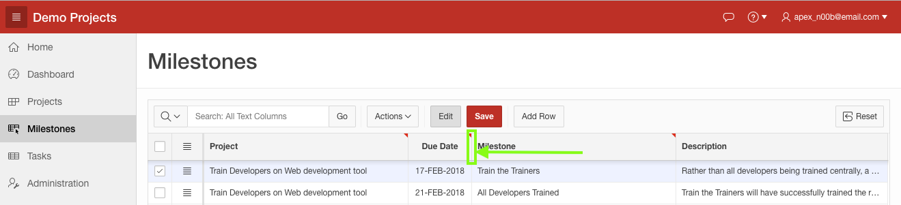
Order the records by Project and Due Date Note: Multiple column sorts can also be entered using Actions > Data > Sort.
In the Runtime environment, click the Project Column Heading, and click Sort Ascending.
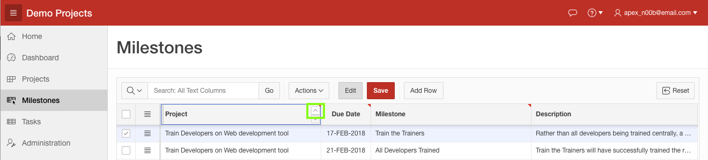
In the Runtime environment, move to the Due Date Column Heading, hold down the shift key and click Sort Ascending.
Note: Holding down the shift key when applying the sort on Due Date causes that column to be defined as the second column in the same sort sequence, rather than replacing the sort on Project. This is indicated by the small subscript numbers in the sort columns, 1 and 2.
Save the Report Layout, so all end users see the improved design.
In the Runtime environment, click Actions ⌄, click Report, and then select Save.
Note: Selecting Save As enables you to save a report layout as either Private, which only you can view, or Alternative, which shows multiple report layouts for end users to choose from.
Now that you have finished updating the Interactive Grid, you should explore the various actions and controls, including those for adding a row, duplicating a row, deleting a row and more. Notice that once the report is in "Edit" mode that the Project column is a select list, due date provides a date picker, and Description is a text area, so you can see multiple lines of text.
In this topic you manipulated an Interactive Grid and saved the report layout.
Updating the Task Pages
In this topic, you update the Tasks report and form page.
Using a report and form is one of the most common ways to allow end users to update records within web applications.
The users find the record they are interested in on the report page, and then insert a new record or review, update or delete an existing record using the form page.
Note: If you have not completed the previous topic, import the APEX 18.1 HOL Basic Topic 4.sql file into your workspace to continue working from this topic forward. You can find the export file in the /files subdirectory where you unzipped the original file. See Appendix A - Importing an Application.
Updating the Interactive Report
An interactive report is similar to an interactive grid, however, records in an interactive report cannot be edited. End users have even more options using the interactive report’s menus and interface to search the report, add elements such as filters and computations, perform pivots, reorganize with sort and breaks, and further customize how the data displays. Such operations can be performed by end users using the Actions menu, and Column Headings. The drag and drop and resizing features, where you use the mouse, are not available in interactive reports. Note: For more details on end user capabilities review the Oracle APEX End User's Guide: Using Interactive Reports.
In the Runtime environment, click Tasks in the Navigation Menu.
As can be seen the Project Id and Milestone Id columns already display the names, rather than the identifiers. This is due to the fact you specified lookup columns in the Create Application Wizard for each of these. There are other minor formatting issues, but all these need to be performed using Page Designer, rather than from the runtime environment, as you did initially with the interactive grid.
Update the Project column heading.
In the Runtime environment, within the Developer Toolbar, click Quick Edit.
Move the mouse over the Project Id column until it is highlighted in blue, and then click the mouse.
In the Property Editor, update the following:
Heading: Heading - enter Project
Update the Milestone column heading.
In the Rendering tab, under the Sample Project Tasks region, click MILESTONE_ID_L$2.
In the Property Editor, update the following:
Heading: Heading - enter Milestone
Update the Name column heading.
In the Rendering tab, under the Sample Project Tasks region, click NAME.
In the Property Editor, update the following:
Heading: Heading - enter Task
Update the date formats so they show actual dates.
In the Rendering tab, under the Sample Project Tasks region, click START_DATE.
Hold down the shift or ctrl key and click END_DATE, so that both dates are selected.
In the Property Editor, update the following:
Appearance: Format Mask - select 12-JAN-2004 from the pick list, or enter DD-MON-YYYY
Update the Cost column format to show dollars.
In the Rendering tab, under the Sample Project Tasks region, click COST.
In the Property Editor, update the following:
Appearance: Format Mask - select $5,234.10
Update the Is Complete column to show 'Yes' or 'No', rather than 'Y' or 'N'.
Rather than updating the format this will involve modifying the SQL Source for the region.
In the Rendering tab, select the Sample Project Tasks region.
In the Property Editor, enter the following:
Source: SQL Source -
Replace the one line of code IS_COMPLETE_YN,
with the following line of code decode(is_complete_yn, 'Y', 'Yes', 'No') IS_COMPLETE_YN,
Note: The decode statement is used to compare the column value against the first value, 'Y', and replace it with the next value, 'Yes', otherwise replace it with the final value, 'No'.
In the Toolbar, click Save and Run to run the Tasks report.
Updating the Task Form Page
The same column headings that were an issue on the report page, are also an issue for the item labels on the form page.
The page title also needs updating.
In the Runtime environment, click the edit icon for one of the tasks.
The Task form page appears as a modal page.
In the Developer Toolbar, click Edit Page 6.
Update the Project item label.
In the Rendering tab, under the Sample Project Task region, click P6_PROJECT_ID.
In the Property Editor, update the following:
Label: Label - enter Project
Update the Milestone item label.
In the Rendering tab, under the Sample Project Task region, click P6_MILESTONE_ID.
In the Property Editor, update the following:
Label: Label - enter Milestone
Update the Name item label.
In the Rendering tab, under the Sample Project Task region, click P6_NAME.
In the Property Editor, update the following:
Label: Label - enter Task
Update the page title to reflect the page function.
In the Rendering tab, select Page 6: Sample Project Task.
In the Property Editor, update the following:
Identification: Name - enter Maintain Task
Identification: Title - enter Maintain Task
In the Toolbar, click Save.
Navigate to the Runtime environment, close the modal dialog, and click the edit icon for one of the tasks.
In this topic you simply updated some labels and a screen title, as the majority of the work was already done by selecting the appropriate lookup columns in the Create Application Wizard.
Adding the Calendar Page
In this topic, you will use the Create Page wizard to add a new calendar page to the application.
Note: If you have not completed the previous topic, import the APEX 18.1 HOL Basic Topic 5.sql file into your workspace to continue working from this topic forward. You can find the export file in the /files subdirectory where you unzipped the original file. See Appendix A - Importing an Application.
Adding a New Page
The Create Page wizard enables developers to add a wide assortment of different page types, significantly more than the page types available in the Create Application wizard.
In the Runtime environment, within the Developer Toolbar, click Application xxxxxx, where 'xxxxxx' represents the Application Id. Note: In the application used for this lab the Application Id is 146310, however, your number will be unique to your application.
From the application home page, click Create Page.
For Page Type, click Calendar.
For Page Attributes, enter the following:
Page Name - enter Calendar
Breadcrumb - select Breadcrumb
Click Next.
Note: The Entry Name item, for Breadcrumb, is populated with the page name, Calendar.
For Navigation Menu, click Create a new navigation menu entry.
Click Next.
Note: The New Navigation Menu Entry item is populated with the page name, Calendar.
On Source, for Table / View Name select SAMPLE$PROJECT_TASKS (table).
Click Next.
For Settings, enter the following:
Display Column - select NAME
End Date Column - Select END_DATE
Click Create.
Note: By selecting an End Date Column the result will be a duration-based calendar.
The calendar has been created, and you are returned to Page Designer, with the new page Page 10: Calendar loaded.
In the Toolbar, click Save and Run to run the calendar page.
Linking the Calendar Page
Currently the calendar records are not linked, however, you can reuse the Maintain Task form page to edit the tasks directly from the calendar.
In the Runtime environment, within the Developer Toolbar, click Edit Page 10.
Define the View / Edit Link.
In the Rendering tab, under Calendar, select Attributes..
In the Property Editor, update the following:
Settings: View / Edit Link - click No Link Defined.
In the popup window, enter the following:
Target: Page - select or enter 6
Set Items: Name - select P6_ID
Set Items: Value - select ID
Clear Session State: Clear Cache - enter 6
Click OK.
In the Toolbar, click Save and Run to run the calendar page.
Click on various calendar entries, and observe the task that is displayed.
Updating the Navigation Menu and Home Page
Currently the Calendar entry in the navigation menu is below Administration and has no icon.
In the Runtime environment, while on the Calendar page, within the Developer Toolbar, click Edit Page 10
In Page Designer, click on the Shared Components tab.
Under Navigation Menu, click Desktop Navigation Menu.
In the Property Editor, click Edit Component.
Note: You could have also navigated to Shared Components from the Toolbar and then selected Navigation Menu.
Review the menu entries and determine a number between the Tasks menu entry and the Administration menu entry.
In the list of menu entries, click Calendar
In the List Entry for Calendar, enter the following:
Entry: Sequence - enter 60 (or a number between the sequence number for Tasks and Administration)
Entry: Image/Class - select fa-calendar
Click Apply Changes.
Add Calendar to the list of options on the Home Page.
On the List Details page, within the List select list, select Page Navigation.
On the List Details page, click Create Entry
In the List Entry page, enter the following:
Entry: Image/Class - enter fa-calendar
Entry: List Entry Label - enter Calendar
Target: Page - Select or enter 10
Click Create List Entry.
In the Toolbar, click Run Page 10
In the Runtime environment, within the Navigation Menu, click Home.
Review the new list entry and the improved navigation menu.
In this topic you added a new page using the Create Page wizard.
Updating the Dashboard Page
In this topic, you will update the charts on the Dashboard page.
Note: If you have not completed the previous topic, import the APEX 18.1 HOL Basic Topic 6.sql file into your workspace to continue working from this topic forward. You can find the export file in the /files subdirectory where you unzipped the original file. See Appendix A - Importing an Application.
Updating the Charts
The Create Application Wizard - Dashboard page includes 4 charts, however, you only entered details for the first two charts.
Therefore, you should delete Chart 3 and Chart 4 from the page.
In the Runtime environment, within the Navigation Menu, click Dashboard.
Within the Developer Toolbar, click Edit Page 2.
In Page Designer, locate Chart 3 in the Rendering tab.
Right-click Chart 3, and click Delete.
Components can also be deleted from the Layout tab.
In the Layout tab, locate Chart 4, right-click Chart 4, and click Delete.
The Project Costs chart can readily be expanded to include both budget and costs in a side-by-side bar chart.
To do so involves updating the current series, and adding a new series to the chart.
In the Rendering tab, click the Project Costs region.
In the Property Editor, update the following:
Identification: Title - enter Project Budgets and Costs
Update Series 1 with a better title and revised SQL.
In the Rendering tab, below Project Budgets and Costs, and under Series, click Series 1.
In the Property Editor, update the following:
Identification: Name - enter Costs
Source: SQL Query - click the Code Editor icon (top right of the SQL Query box)
In the Code Editor enter the following SQL:
select p.name, sum(cost) value
from sample$project_tasks t
, sample$projects p
where p.id = t.project_id
group by p.name
order by 1
To ensure the SQL is correct, click Validate in the Code Editor toolbar. Validation successful should display above the SQL. If not check that the SQL you enter matches the code above.
Click OK.
Note: This revised SQL joins the Tasks and Projects tables, so the chart can display the project name instead of the project id.
To do this you need to include the where condition linking the primary key column from projects (p.id) with the foreign key column from tasks (t.project_id). The group by clause also needs to be updated as the display column has been updated.
Finally, you want to order by the project name, instead of the cost, as you will be adding in a second series that will also be ordered by project name.
Both tables have an alias to make it easier to reference that specific table in the SQL.
Because the Label column was updated, you need to redo the column mapping.
In the Property Editor, update the following:
Column Mapping: Label - select NAME
Add a second series for budgets.
In the Rendering tab, below Project Budgets and Costs, right-click Series, and click Create Series.
Given the budget column is in the SAMPLE$PROJECTS table we can simply select the appropriate table and columns rather than having to write an SQL statement.
In the Rendering tab, below Project Budgets and Costs, and under Series, click New.
In the Property Editor, update the following:
Identification: Name - enter Budgets
Source: Table Name - select SAMPLE$PROJECTS
Column Mapping: Label - select NAME
Column Mapping: Value - select BUDGET
Time to run the application to see how the chart looks!
In the Page Designer Toolbar, click Save and Run.
The chart shows the data nicely, but the labels are badly cut off, and there is no legend.
In the Runtime environment, using the Developer Toolbar, click Edit Page 2.
In Page Designer, within the Rendering tab, under Project Budgets and Costs, click Attributes.
In the Property Editor, update the following:
Layout: Height - enter 600
Legend: Show - Click Yes
Legend: Position - select Top
Legend: Hide and Show Behavior - select No Rescaling
The Y-axis currently shows 20K, 40K, and so forth. It would be much better to show them as dollar amounts.
In the Rendering tab, below Project Budgets and Costs, and under Axes, click y.
In the Property Editor, update the following:
Value: Format Type - select Currency
Value: Currency - enter $
The Project Budgets and Costs chart should now be complete.
In the Page Designer Toolbar, click Save and Run.
The chart should look much better now, however, it doesn't display properly.
In the Runtime Environment, within the Developer Toolbar, click Quick Edit.
Hover over the Project Budgets and Costs region until a blue box appears around the outside of the region.
Click the wrench in the top right corner.
In Live Template Options, update the following:
Body Height - select Auto - Default Note: As soon as you change the Body Height attribute, the chart will expand based on the height specified in attributes, which is 600 pixels.
Click Save.
Note: Hover over one of the entries to see the details for the selected entry.
Hover over Cost or Budget in the Legend, and see what happens to the chart.
Click on one of the Legend entries and those values will disappear from the chart. Click it again to restore the values.
The Project Status chart needs some improvement as well.
Navigate back to Page Designer.
In the Rendering tab, below Project Status, and under Series, click Series 1.
In the Property Editor, update the following:
Source: SQL Query - replace the current code with the following:
select s.description, count(*) value
from sample$projects p
, sample$project_status s
where p.status_id = s.id
group by s.description
order by 2 desc
Column Mapping: Label - select DESCRIPTION
The chart needs to be made smaller and include a legend.
In the Rendering tab, under Project Status, click Attributes.
In the Property Editor, update the following:
Layout: Height - enter 250
Legend: Show - Click Yes
Legend: Position - select End
Legend: Hide and Show Behavior - select Rescale
The Project Status chart should now be complete.
In the Page Designer Toolbar, click Save and Run.
The chart should look much better now.
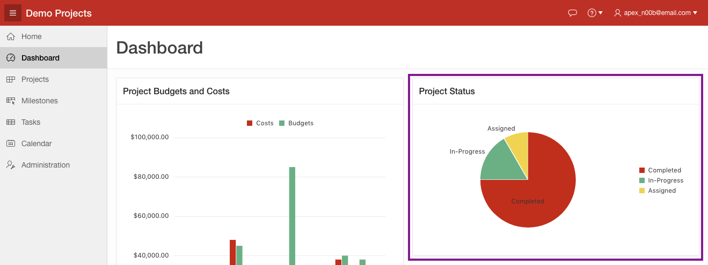
Adding Reports
There is room underneath the Project Status chart for a narrow report, therefore, a report showing upcoming milestones would fit nicely.
At the bottom of the page it would be good to show incomplete tasks to round off the dashboard page.
Use drag and drop to insert a Classic Report under the Project Status chart.
In Page Designer, click Layout, and locate the Gallery (directly under the Layout tab).
Click Regions, and locate Classic Report.
Click and hold Classic Report and drag it up into Layout, directly below the Project Status region.
It should appear as a darken yellow tile before you drop it into place. 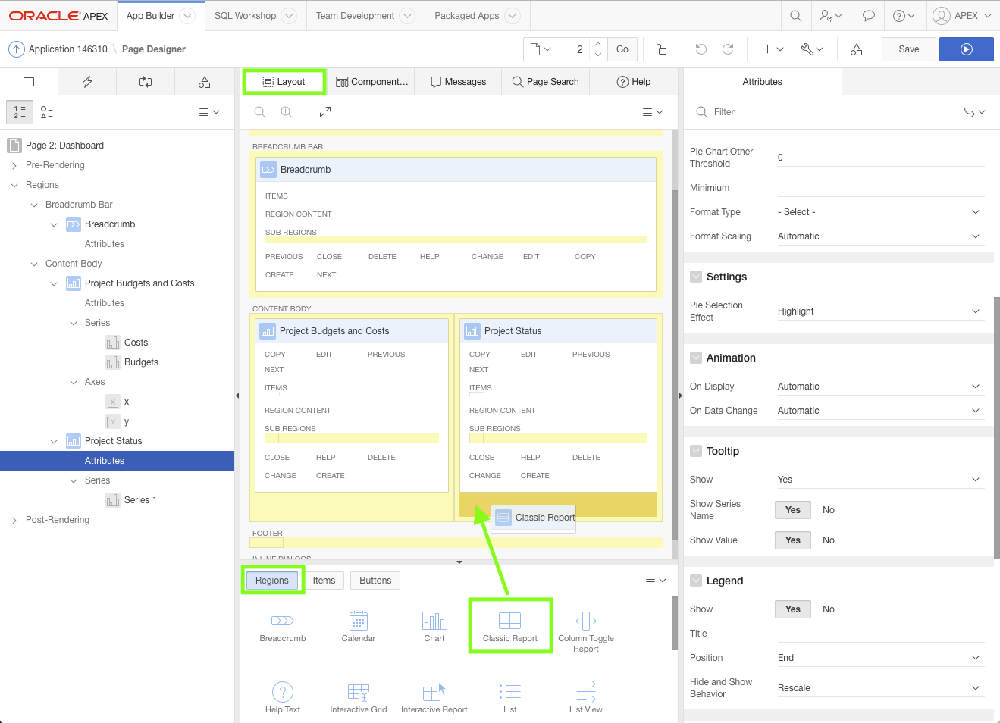
Update the report properties.
In the Property Editor, update the following:
Identification: Title - enter Upcoming Milestones
Source: Type - select SQL Query
Source: SQL Query - enter the following code:
select p.name project
, m.name milestone
, m.due_date
from sample$projects p
, sample$project_milestones m
where p.id = m.project_id
and m.due_date >= sysdate
Note: To ensure only future milestones are returned, the milestone due date is compared to sysdate which represents the current date in the Oracle database.
Update the report attributes, to only display 5 records at once.
In the Rendering tab, under Upcoming Milestones, click Attributes.
In the Property Editor, enter the following:
Layout: Number of Rows - enter 5
It would be very beneficial to also list the incomplete tasks on the dashboard page.
To do so you will add another classic report at the bottom of the page.
In the Rendering tab, right-click on Content Body, and select Create Region.
Update the report properties.
In the Property Editor, update the following:
Identification: Title - enter Incomplete Tasks
Identification: Type - select Classic Report
Source: Type - select SQL Query
Source: SQL Query - enter the following code:
select p.name project
, m.name milestone
, m.due_date
, t.name task
, t.start_date
, t.end_date
from sample$projects p
, sample$project_milestones m
, sample$project_tasks t
where p.id = m.project_id
and p.id = t.project_id
and t.milestone_id = m.id (+)
and nvl(t.is_complete_yn, 'N') = 'N'
Note: Milestones are only optional for tasks, therefore, when joining the tasks and milestones tables it uses an outer join ( + ) so that all tasks are returned, even if they don't have an associated milestone.
Only incomplete tasks are to be displayed, irrespective of their start and end dates, so the Tasks column is_complete_yn is checked.
The reports should now be complete.
In the Page Designer Toolbar, click Save and Run.
The new reports are displayed.
Both reports can readily be improved by removing body padding.
In the Runtime Environment, within the Developer Toolbar, click Quick Edit.
Hover over the Upcoming Milestones region until a blue box appears around the outside of the region.
Click the Wrench in the top right corner
In Live Template Options, update the following:
General - Check Remove Body Padding
Click Save.
In the Runtime Environment, within the Developer Toolbar, click Quick Edit.
Hover over the Upcoming Tasks region until a blue box appears around the outside of the region.
Click the Wrench in the top right corner.
In Live Template Options, update the following:
General - Check Remove Body Padding
Click Save.
In this section you learn how to manipulate charts to produce different visualizations.
Appendix A - Importing an Application
Note: When an application is exported it includes all the application meta data (definitions), but generally does not include the underlying tables and data.
Developers can include installation and upgrade scripts as part of Supporting Objects, however, the application exports included with this tutorial do not include any Supporting Objects.
Therefore, importing this file will not create the required database objects.
To create these objects, follow the steps in Topic 2. Loading the Tables and Data.
If you wish to import an application export into your environment follow these procedures: Note: These procedures will overwrite your existing application definition with the file you are importing.
Navigate to the Application Builder Home Page, by clicking the Application Builder tab, or the up arrow.
Note: Some of the labels outlined below may be different based on the browser you are using.
Click Import.
For Import File, click Choose File, where you extracted apex-hol-basic-4475399.zip, open the files folder.
Locate the appropriate APEX 18.1 HOL Basic Topic file, and double-click the file or click the file and then click Open.
Verify that the File Type is Database Application, Page or Component Export.
Click Next.
For the File Import Confirmation step, click Next.
For the Install step:
Parsing Schema - verify the schema is correct
Build Status - verify the selection is Run and Build Application
Install As Application - select Change Application Id Note: If you don't want to overwrite your existing application but create a new application, select Auto Assign New Application ID .
New Application - enter the Application Id for your existing application. Note: The New Application text field will only be displayed after the Change Application Id option has been selected.
Click Install Application.
On the Confirm Replace Application step, click Replace Application. Note: If this step doesn't display then you did not enter the existing Application Id on the previous step.
A box with Installing Application ... will be displayed for a short period (< 1 minute).
Once the application has been successfully installed, click Edit Application.
Continue with the appropriate topic!
Appendix B - Migrating your Application Development between Environments
Overview
An application written with Application Express can readily be moved from one environment to another.
It is normal development practice to move an application from development to test to production.
This generally involves exporting the application from development and importing it into the test or production environment.
If the latest development also requires changes to database object structures, such as creating a new table or adding a new column, then a separate Database Definition Language (DDL) script should be written for updating the other environments.
Similarly, if data needs to be manipulated, such as inserting or updating records, then a Data Manipulation Language (DML) script should be written.
Migrating where you do your application development, for example from on-premise to the cloud, is much the same as the steps required for rolling out a new version of your application to test or production.
However, rather than just providing scripts for the deltas between the current production and development environments, you need to create scripts for all the database objects (DDL) and you need to move all the data from development into the new environment.
This section covers the steps required to move your development environment from one Oracle Application Express installation to another.
Oracle Database Cloud Service: There are currently three Oracle Database Cloud services available - Database as a Service ( DBaaS), Exadata Express Cloud Service, and Database Schema Service.
With the Schema Service you are subscribing to a slice (single schema) of an Oracle Database, which you share with many other tenants.
For the security of all tenants, external access to the service is restricted to RESTful Web Services and Application Express applications.
Oracle SQL Developer 4.0, and above, enables you to define a RESTful connection to your Schema Service.
This connection can be used to easily move database objects and table data from any Oracle Database you can access to the cloud.
However, this RESTful connection cannot be used to move data from your Schema Service to an external Oracle Database.
Database as a Service provides full access to the underlying Oracle Database.
For security reasons, most ports, such as 1521 which is generally used for database communication, are not accessible.
However, port 22 is available and together with SSH Tunneling can be used to define a connection to the database in your service.
Using SQL Developer 4.0, and above, you can move database objects and data into or out of your Database as a Service and Exadata Services.
Warning:
You cannot import an application into an earlier release of Application Express.
For example, if you are exporting an application from the Oracle Database Cloud - Schema Service, which is currently Application Express 5.1, you cannot import that application into an on-premise installation that is only running Application Express 4.2.
You will need to update the target Application Express environment prior to importing the application.
Check the version of Application Express in both your current development environment and the environment you are migrating to.
In any release of Application Express, check the bottom right corner for the version information.
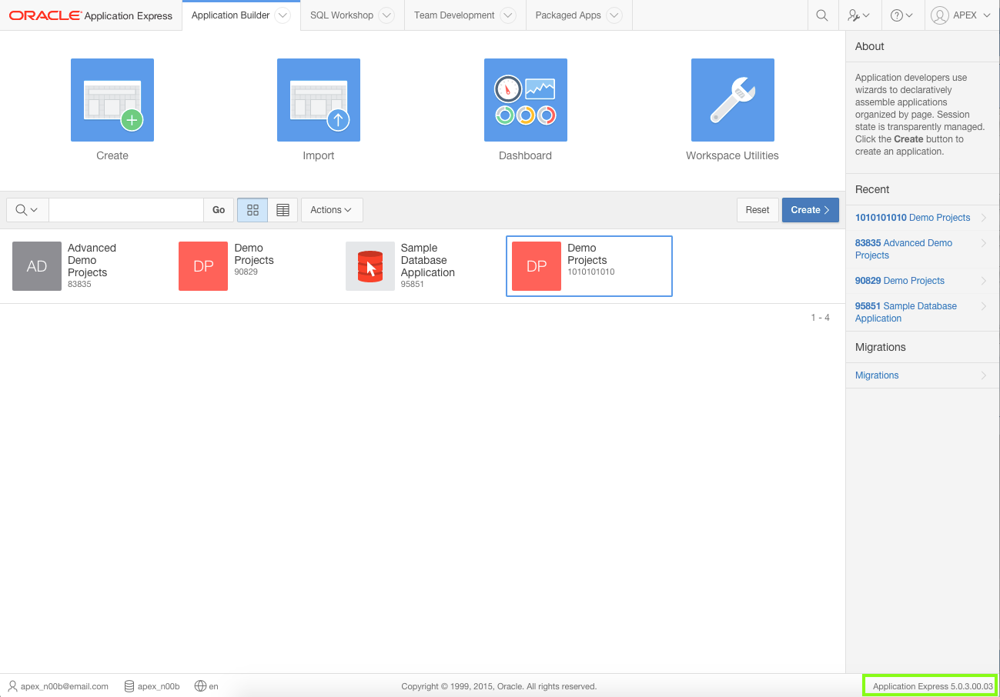
In Application Express 5.0 and above, you can also click Help and then select About.
Migration Steps
Up until this point, you may have been developing on a local development instance, and now want to move your development to the Oracle Database Cloud service to continue.
Migrating the environment where you develop your application involves the following:
Exporting the application from the current environment, and importing it into the new environment
Recreating all the database objects, such as tables, packages and so forth, and then populating the tables with the data from the current environment
Testing the application in the new environment
Migrating the Application
An application written in Application Express is stored as meta-data in the Oracle Database. As you define applications, pages, regions, items, and so forth, the definitions are saved in various tables defined within the Application Express Engine schema. When you export an application a single SQL file is created by extracting the application definitions from the meta-data tables. When importing the application, records are inserted (or updated if overwriting an existing application) into the Application Express meta-data tables, of the environment being imported into. Therefore, once an application is imported, all the application definitions can be reviewed from the Application Builder, and the application can be run immediately. However, running the application will produce errors if the required database objects are not available in the workspace.
Note: The export only captures the application definition, and does not export any of the underlying database objects or data that may be associated with the application. Application Express does include the ability to define installation and update scripts within Supporting Objects. However, developers must manually define these scripts. The use of Supporting Objects is not covered in this workshop.
From your current development environment, navigate to the Home Page for your current application.
Click Export / Import.
Click Export.
For Export Preferences set the following:
Export Private Interactive Reports - select Yes
Export with Original IDs - select Yes Note: Exporting with the Original IDs will allow an export from the target environment to be reimported back into this current environment, if necessary at some later date.
Click Export.
In the Save Dialog, click Save. Note: It is good practice to rename the export file and include a version or date so that subsequent exports do not overwrite previous exports.
Creating a subdirectory, specifically for all the files required for the migration, makes it easier to locate the files when using them within the target environment.
Log into your target Application Express environment.
Navigate to the Application Builder Home Page.
Note: Some of the labels outlined below may be different based on the browser you are using.
Click Import.
For Import File, click Choose File.
In the operating system File Browser, navigate to the subdirectory where you saved the export file.
Locate the export file, and double-click the file or click the file and then click Open.
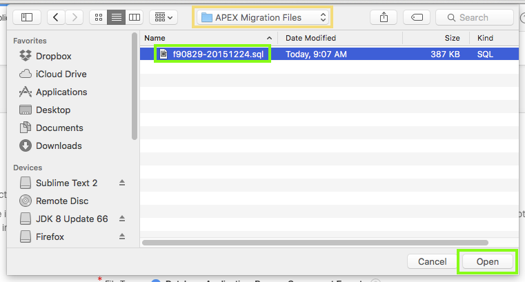
Verify that the File Type is Database Application, Page or Component Export
Click Next.
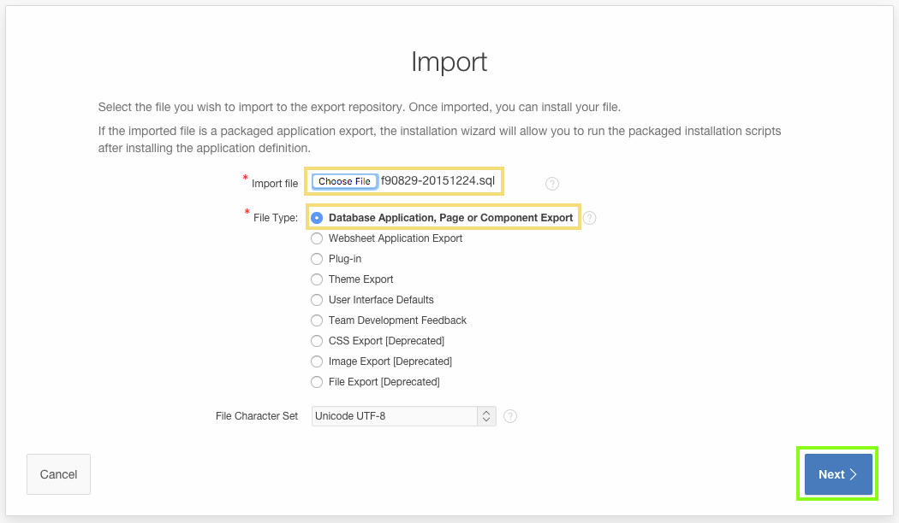
For the File Import Confirmation step, click Next.
For ease of reference it is preferable to keep the same Application Id in the target development environment.
However, this may not be viable, in which case assigning a new application Id will need to be used.
For the Install step, verify the Parsing Schema is correct, and verify the Build Status is Run and Build Application,
For Install As Applications, select Reuse Application ID xxxxx From Export File.
Click Install Application.
Note: The majority of Application Express workspaces are only associated with a single schema. As such the Parsing Schema will not need to be updated as it will default to the only associated schema.
If you are installing into the Oracle Database Cloud - Schema Service then there are restrictions on the ranges for Application Ids.
Return to the previous step and for Install As Application, select Auto Assign New Application ID.
The existing Application Id from your current development environment may already be used by another application in the target environment.
This Application Id may exist in your workspace or another workspace in the same environment.
Return to the previous step and for Install As Application, select Auto Assign New Application ID.
A box with Installing Application ... will be displayed for a short period (< 1 minute).
Once the application has been successfully installed, click Edit Application.
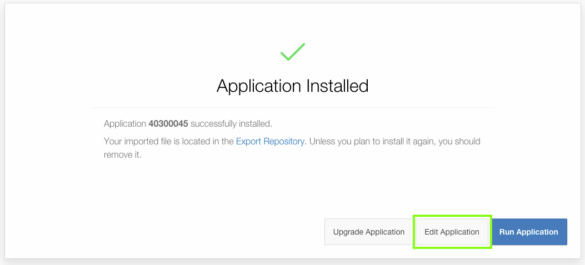
You have installed the application in your target environment. However, until you have imported the database objects (tables) and data, you will get errors when you try and run the application.
Migrating Database Objects and Data
The two primary ways to move the database objects and data from one environment to another, for a single application,
is using either Oracle SQL Developer, or Application Express > SQL Workshop.
Oracle SQL Developer is a free integrated development environment that simplifies the development and management of Oracle Database in both traditional and Cloud deployments.
SQL Developer is familiar to most professional Oracle developers and DBAs, but perhaps not to business developers.
Oracle Application Express includes SQL Workshop which also provides capabilities for managing database objects. SQL Workshop is designed for application developers who do not have direct access to the underlying Oracle Database, such as in hosted environments such as http://apex.oracle.com.
Note: Other techniques are available if moving complete development environments, or whole workspaces. For example, if using Oracle Database 12c Multitenant Option, you may be able to simply move the Pluggable Database (PDB) from one environment to another using Oracle Enterprise Manager 12c. In addition, there are a number of techniques available to move tables with large data volumes between environments.
To use SQL Developer you must be able to connect to the Oracle Database schemas for both the development environment and the target environment.
You need to connect to the data schema associated with your workspace.
Once connected to both schemas, it is simply a matter of dropping the required database objects from the current schema into the Cart, where you can also include the table data, and then moving it to the target schema.
To determine your Oracle Database schema name associated with your Application Express workspace, log into Application Express.
Click SQL Workshop, and review the schema name listed.
Determine if you can use SQL Developer, by answering the following questions:
Can you connect to the Oracle Database schema in the current environment?
On-Premise - MAYBE: If you have, or can obtain, database credentials for the current schema from your Oracle Database Administrator
apex.oracle.com - NO: SQL access is not provided for this public facing service
Oracle Database Cloud Service - Database as a Service (DBaaS) / Exadata Service - YES: The required credentials are provided
Oracle Database Cloud Service - Database Schema Service - NO: Although you can connect to this service using SQL Developer, you cannot use the Cart feature to move objects out of the cloud environment
Local Install - YES: If you have installed the Oracle Database directly on to your laptop or desktop, you should be able to determine, or reset the password for the data schema associated with your workspace..
Oracle Database Cloud Service - Database as a Service (DBaaS) / Exadata Service - YES: Although you can connect to these services using SQL Developer, you cannot use the Cart feature to move objects out of the cloud environment
Public Hosting Service - MAYBE: If you have, or can obtain, database credentials for the current schema from your Hosting Provider
Can you connect to the Oracle Database schema in the target environment?
On-Premise - MAYBE: If you have, or can obtain, database credentials for the target schema from your Oracle Database Administrator
apex.oracle.com - NO: SQL access is not provided for this public facing service
Oracle Database Cloud Service - YES: SQL Developer can be connected and used to move data into these cloud environments
Local Install - YES: If you have installed the Oracle Database directly on to your laptop or desktop, you should be able to determine, or reset the password for the data schema associated with your workspace.
Public Hosting Service - MAYBE: If you have, or can obtain, database credentials for the target schema from your Hosting Provider
Note:Oracle Database Cloud Service currently includes three distinct services - Database Schema Service, Database as a Service (DBaaS), and Exadata Service.
If you answered "YES" to both questions above, then follow the steps outlined in B-1 : Migrating using SQL Developer.
If you could not answer both questions "YES", then follow the steps outlined in B-2 : Migrating using Application Express Only.
B-1 : Migrating using SQL Developer
Connecting to SQL Developer
If SQL Developer is not currently installed on your computer, download the latest version from Oracle Technology Network (OTN) here.
You will need to define two connections - one to the current and one to the target Oracle Database schemas, associated with your Application Express workspaces.
If you are connecting SQL Developer to an On-Premise, local install, or Public Hosting Service, then start SQL Developer.
Click Add (New Connection) and enter the following:
Connection Name - enter a meaningful name for the schema
Username - enter the schema name associated with the Application Express workspace
Password - enter the password for the schema
Check Save Password
Hostname - enter the appropriate Hostname for your environment
Port - enter the appropriate port for your environment (normally 1521)
SID / Service Name - enter either the SID or Service Name for your environment
Click Test to ensure your connection details are correct.
Click Save.
If you are connecting SQL Developer to the Oracle Database Cloud - Database Schema Service then following this documentation: Using Oracle Database Cloud - Database Schema Service > ... > Configuring Oracle SQL Developer Cloud Connection
and Using Oracle Database Cloud - Database Schema Service > ... > Setting Up Secure FTP Account. Warning: You must be using SQL Developer 4.0 or above. The instructions in the lab are based on SQL Developer 4.1. Note: With Database Schema Service you get a slice (schema) of a fully managed Oracle Database running on Exadata.
However, you do not have access to the operating system or direct access to the underlying Oracle Database.
For this reason, connection to this service is via RESTful Web services over HTTPS.
You will create a connection using the Service SFTP User Name details.
If you are connecting SQL Developer to the Oracle Database Cloud - Database as a Service (DBaaS) / Exadata Service then following this lab: Oracle Database Cloud Service - Advanced Hands On Labs: Lab 2.< br>
Warning: You must be using SQL Developer 4.0 or above. The instructions in the lab are based on SQL Developer 4.1. Note: With DBaaS and Exadata Service you have access to the entire database, with root, and DBA level access.
However, as this service is available over the Internet, not all ports are open, including port 1521.
Port 1521 is the default port the database listener services connection request with.
For this reason, connection to these services is via SSH Tunneling, using port 22 which is open.
You will create a connection on port 22 of the DBaaS / Exadata Service virtual machine running your database.
The SSH Tunneling then forwards the traffic from SQL Developer to port 1521 on the same virtual machine.
If your target Oracle Database Schema is Oracle Database Cloud - Database as a Service (DBaaS) / Exadata Service, then follow this documentation: SQL Developer User's Guide > 1. SQL Developer Concepts and Usage > 1.15 Using the Cart. Note: Because you have a standard connection to your cloud service, via SSH Tunneling, then you follow the SQL Developer documentation.
The documentation for the Database Schema Service is specific to that service, as it utilizes the Secure FTP server to transfer the files.
You need to load the following database objects into the SQL Developer Cart:
Table DEMO_MILESTONES - Including data
Table DEMO_PROJECTS - Including data
Table DEMO_TASKS - Including data
Table DEMO_TEAM_MEMBERS - Including data
Trigger BIU_DEMO_MILESTONES
Trigger BIU_DEMO_PROJECTS
Trigger BIU_DEMO_TASKS
Trigger BIU_DEMO_TEAM_MEMBERS
Note: You do not need to include the package DEMO_PROJECTS_DATA_PKG as the data will be included in the SQL Developer cart.
B-2 : Migrating using Application Express Only
The SQL Workshop within Application Express provides all the tools required for migrating database objects and data.
However, you will need to perform more steps to accomplish this task than simply using the SQL Developer Cart, and dragging and dropping database objects.
Preparing the Database Objects and Data Files
Log into your current Application Express development environment.
Use SQL Workshop to create a script file, for creating the table definitions.
Click SQL Workshop.
Click Utilities.
Locate Generate DDL. Click Generate DDL.
Click Create Script.
Verify the Schema name is correct, and click Next.
For Output select Save As Script File, and for Object Type check Table.
Click Next.
Select the following tables:
DEMO_MILESTONES
DEMO_PROJECTS
DEMO_TASKS
DEMO_TEAM_MEMBERS
Click Generate DDL.
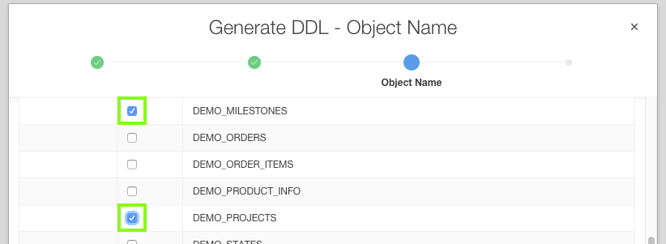
For Script Name, enter a meaningful name. Optionally enter a description.
Click Create Script.
After a short wait, generally less than a minute, you will be returned to SQL Scripts.
You will see the scripts that were uploaded earlier, then the page will refresh and will show the new script just created.
Click the Edit icon (pencil) on the recently created script.
Click Download.
Click Save.
Use SQL Workshop to create a script file, for creating the trigger definitions.
Click SQL Workshop.
Click Utilities.
Locate Generate DDL. Click Generate DDL.
Click Create Script.
Verify the Schema name is correct, and click Next.
For Output select Save As Script File, and for Object Type check Trigger.
Click Next.
Select the following triggers:
BIU_DEMO_MILESTONES
BIU_DEMO_PROJECTS
BIU_DEMO_TASKS
BIU_DEMO_TEAM_MEMBERS
Click Generate DDL.
For Script Name, enter a meaningful name. Optionally enter a description.
Click Create Script.
After a short wait, generally less than a minute, you will be returned to SQL Scripts.
You will see the scripts that were uploaded earlier, then the page will refresh and will show the new script just created.
Click the Edit icon (pencil) on the recently created script.
Click Download.
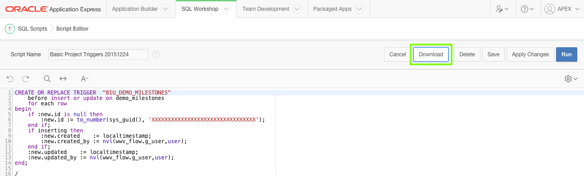
Click Save.
Use SQL Workshop to create XML files for your data.
In the Application Express main toolbar, click the SQL Workshop down arrow ( ↓ ), select Utilities and then select Data Workshop.
Under Data Unload locate to XML. Click to XML.
Verify the value for Table Owner is the correct schema.
For Table select DEMO_MILESTONES.
For Columns click on ID, hold down the Ctrl key, and then click on UPDATED_BY, such that all the columns are selected.
Click Unload Data.
For Save As enter a meaningful name.
Click Save.
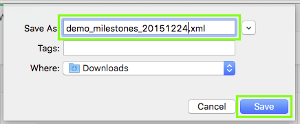
After saving the file you will be returned to the Unload to XML - Columns dialog.
For Table select DEMO_PROJECTS.
For Columns click on ID, hold down the Ctrl key, and then click on UPDATED_BY, such that all the columns are selected.
Click Unload Data.
For Table select DEMO_TASKS.
For Columns click on ID, hold down the Ctrl key, and then click on UPDATED_BY, such that all the columns are selected.
Click Unload Data. Note: You will need to scroll down in the list of columns to see the UPDATED_BY column.
For Table select DEMO_TEAM_MEMBERS.
For Columns click on ID, hold down the Ctrl key, and then click on UPDATED_BY, such that all the columns are selected.
Click Unload Data. Note: You will need to scroll down in the list of columns to see the UPDATED_BY column.
Click Cancel, to exit the dialog.
Recreating the Database Objects and Migrating the Data
Log into your target Application Express development environment.
Use SQL Workshop to load and run the script file, for creating the table and trigger definitions.
Click SQL Workshop.
Click SQL Scripts.
Upload the script to create the tables first.
Click Upload.
For File, click Choose File.
In the operating system File Browser, navigate to the subdirectory where you saved the table script file.
Locate the table script file, and double-click the file or click the file and then click Open.
Click Upload.
Click the Run icon to the right of the script you uploaded.
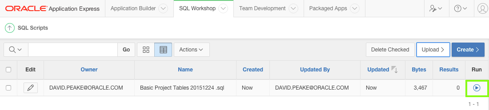
Click Run Now.
Click the View Results icon for the script you just ran.
At the bottom of the results page you should see "9" Statements Processed, "9" Successful, and "0" With Errors.
Upload the script to create the triggers.
Click Upload.
For File, click Choose File.
In the operating system File Browser, navigate to the subdirectory where you saved the table script file.
Locate the table script file, and double-click the file or click the file and then click Open.
Click Upload.
Click the Run icon to the right of the script you uploaded.
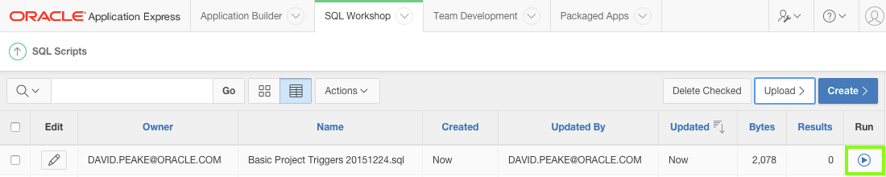
Click Run Now.
Click the View Results icon for the script you just ran.
At the bottom of the results page you should see "8" Statements Processed, "8" Successful, and "0" With Errors.
Currently the tables you created do not have any data. Use the XML files you created to populate the tables.
Note: The order in which the tables are populated is crucial, to ensure referential integrity does not prevent records loading.
For example, loading any records into DEMO_PROJECTS before loading the records into DEMO_TEAM_MEMBERS will fail, as the ASSIGNEE column in DEMO_PROJECTS must correspond to an existing record in DEMO_TEAM_MEMBERS.
In the Application Express main toolbar, click the SQL Workshop Down Arrow ( ↓ ), select Utilities and then select Data Workshop.
Under Data Load, locate XML Data. Click XML Data.
Verify the value for Schema is correct.
For Table, select DEMO_TEAM_MEMBERS.
For File, click Choose File, locate the file for DEMO_TEAM_MEMBERS, and double-click the file or click the file and then click Open.
Click Load Data.
Under Data Load, click XML Data.
For Table, select DEMO_PROJECTS.
For File, click Choose File, locate the file for DEMO_PROJECTS, and double-click the file or click the file and then click Open .
Under Data Load, click XML Data.
For Table, select DEMO_MILESTONES.
For File, click Choose File, locate the file for DEMO_MILESTONES, and double-click the file or click the file and then click Open.
Under Data Load, click XML Data.
For Table, select DEMO_TASKS.
For File, click Choose File, locate the file for DEMO_TASKS, and double-click the file or click the file and then click Open.
Review the tables in SQL Workshop > Object Browser to ensure the data has loaded successfully in all four tables.
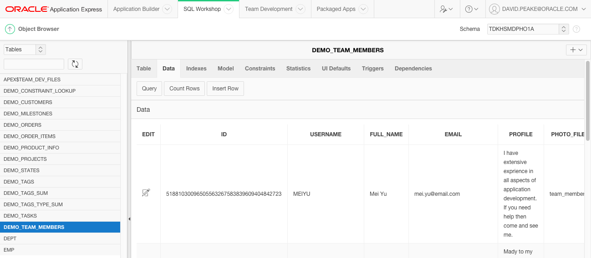
Test the Migrated Application
The target development environment should now have everything you need to continue developing the application.
Note: Before running the application, especially if you are using an Oracle Database Cloud Service, you may need to create a runtime user.
In the main Application Express Toolbar, click Administration (on the right), and select Manage Users and Groups.
Click Create User, enter the same username you use in the current development environment.
In the Application Builder Home Page, click the Run icon for the Demo Projects application. Note: If the My Outstanding Tasks report has no data in your target environment, this is caused by logging into the runtime application with a different username to the one used in your current development environment. Go to Administration and create a new user.
 APEX 18.1 Basic Demo Projects Hands-On Lab (v1.0.3)
APEX 18.1 Basic Demo Projects Hands-On Lab (v1.0.3) Before You Begin
Before You Begin Loading the Tables and Data
Loading the Tables and Data Creating the Initial Application
Creating the Initial Application Updating the Project Page(s)
Updating the Project Page(s)


 Updating the Milestones Page
Updating the Milestones Page

 Updating the Task Pages
Updating the Task Pages
 Adding the Calendar Page
Adding the Calendar Page Updating the Dashboard Page
Updating the Dashboard Page

 Appendix A - Importing an Application
Appendix A - Importing an Application